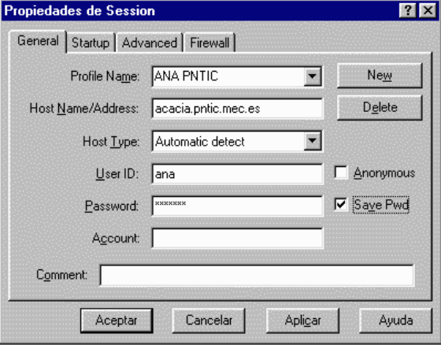
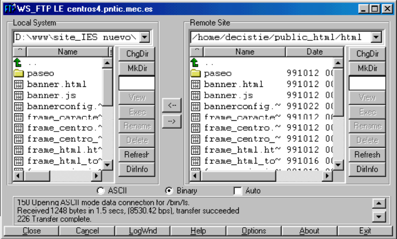

Un programa de FTP sirve para transmisión de ficheros, normalmente para publicación en el servidor de internet de los ficheros de nuestro sitio web.
Vamos a ver un programa muy extendido el WS_FTP. El primer paso es la conexión (imagen izquierda), después nos aparece en la segunda pantalla, aquí hay dos zonas: izquierda con los archivos de nuestro PC y derecha con los ficheros del servidor web.
